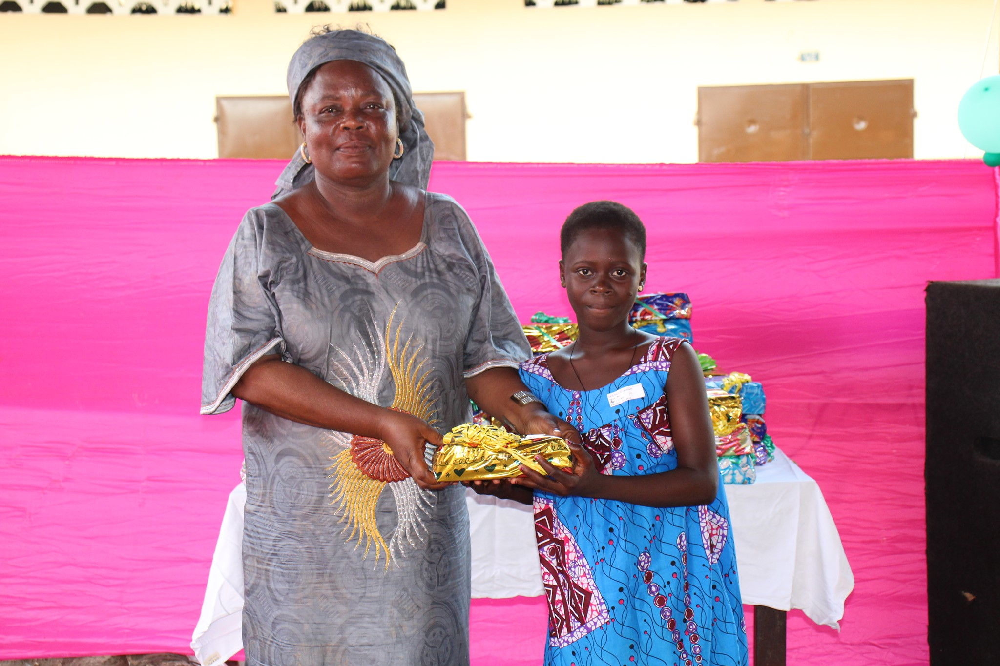

ACCOMPAGNEMENT LOCAL
Hébergement

Insertion professionnelle

Rédaction de CV
Recherche d’emploi
Coaching d’entretien
Distribution de kits
Alimentaires
Vestimentaires
Relation d'aide

Renaitre de Nouveau s'engage à apporter un soutien crucial aux sans-abris, leur offrant bien plus qu'un simple abri. Notre approche holistique vise à restaurer la dignité de ces individus en leur fournissant un accompagnement personnalisé, des ressources essentielles et un soutien émotionnel. À travers nos programmes innovants, nous travaillons main dans la main avec les sans-abris pour les aider à reconstruire leur vie et à retrouver leur place dans la société. Chez Renaitre de Nouveau, chaque individu compte, et nous sommes déterminés à leur offrir l'espoir et les outils nécessaires pour un avenir meilleur.
Être sans-abri, c'est bien plus qu'une absence de toit ; c'est une lutte quotidienne contre l'incertitude, la vulnérabilité et l'exclusion sociale. Chez Renaitre de Nouveau, nous comprenons que derrière chaque personne sans-abri se cache une histoire, une dignité et un potentiel inexploité. C'est pourquoi nous nous engageons à offrir bien plus qu'un toit. Notre action commence par le relogement, offrant un refuge sûr et stable pour prévenir les problèmes de santé et l'insécurité. Mais notre soutien ne s'arrête pas là. Nous accompagnons chaque individu dans leur réinsertion sociale et professionnelle, les aidant à retrouver leur place dans la société et à restaurer leur estime de soi. Parce que chaque être humain mérite une seconde chance, nous croyons en la puissance de la solidarité pour redonner espoir aux plus vulnérables.